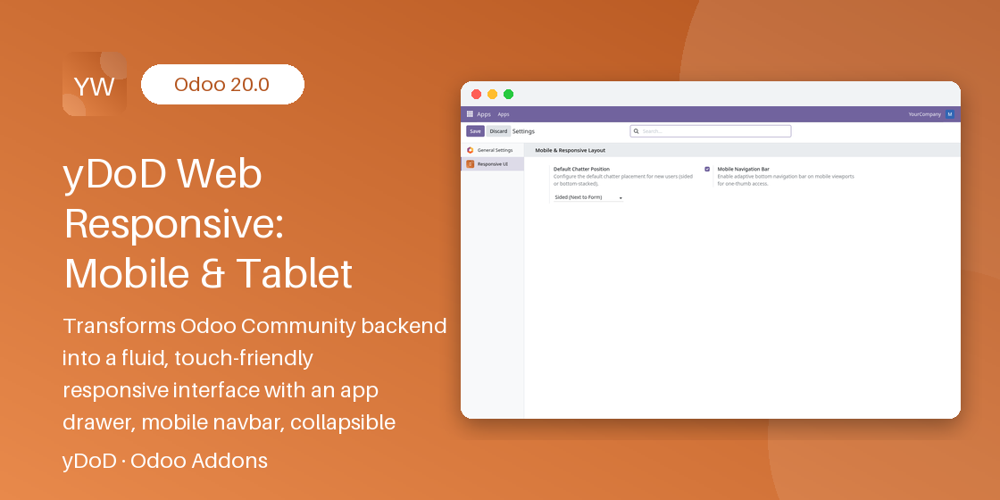

Related Modules
Work even better together with yDoD apps for Odoo 18.0.
Empower warehouse workers, field technicians, sales representatives, and managers with a fluid, app-like mobile experience. Zero external dependencies, pure LGPL-compatible code, and instantaneous client-side responsiveness.

Designed specifically for smartphones and tablets to make enterprise data accessible and pleasant to navigate anywhere.
Tapping the app switcher opens an elegant, hardware-accelerated grid of apps with instantaneous client-side search filtering. Find and launch any module in milliseconds.
One-thumb ergonomic navigation bar appears on mobile screens (<768px) providing immediate shortcuts to Home/Apps, Back, Menu, and Chatter.
Choose between side-by-side drawer layout on large screens or clean bottom-stacked placement. Preferences persist per user and across sessions automatically.
Never lose context when scrolling through extensive list views. Table headers lock firmly at the top, accompanied by horizontal scroll indicators for wide datasets.
All interactive buttons, selectors, and form elements are sized to at least 44px to satisfy WCAG mobile accessibility guidelines and prevent accidental mis-taps.
Clean, high-performance architecture built directly on Odoo Community OWL and SCSS. Absolutely no third-party JavaScript libraries or proprietary vendor locks.
Get up and running in four easy steps without manual theme compilation.
Install yDoD Web Responsive directly from Apps. Responsive styles and components activate automatically.
Access your Odoo instance from any smartphone or tablet browser. The adaptive bottom bar and mobile layout engage dynamically.
Tap the App Drawer icon to trigger the full-screen app switcher. Start typing to filter applications instantly.
Adjust your preferred chatter placement (Sided vs Bottom) under My Profile > Preferences anytime.
System administrators can configure system defaults under Settings > Technical > User Interface > Responsive Settings:
Need help installing or extending yDoD Web Responsive for custom business needs? Our team is available for prompt technical support and custom Odoo consulting.
Work even better together with yDoD apps for Odoo 18.0.